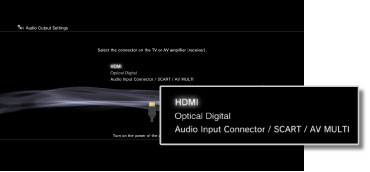
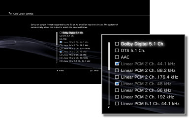
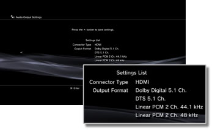

Settings > Sound Settings > Audio Output Settings
Audio Output Settings
Adjust the system's audio output settings. These settings are mainly used when the system is connected to audio devices that support digital audio output, such as AV amplifiers (receivers) for home entertainment systems.
1. |
Confirm the formats supported by your audio device. |
||||||||||||
|---|---|---|---|---|---|---|---|---|---|---|---|---|---|
2. |
Select |
||||||||||||
3. |
Select [Audio Output Settings]. |
||||||||||||
4. |
Select the input connector on the audio device. Channel numbers and audio formats that are supported vary depending on the connector in use. 
|
||||||||||||
5. |
Select audio output formats.  |
||||||||||||
6. |
Check your settings.  |
||||||||||||
7. |
Save your settings. |
 button.
button.Hints
- [Linear PCM 2 Ch.] audio is set to be output from all output connectors by default. If you change the audio output settings, audio will be output only from the connectors that were set.
- If you change the audio output settings, the system will no longer be able to output audio from multiple output connectors at the same time. For example, if your system is connected to a TV via an HDMI cable and to an audio device via a digital optical cable and you switch to [Optical Digital] under [Audio Output Settings], audio will no longer be output from the TV. To output audio from the TV, switch the setting to [HDMI], or select
 (Settings) >
(Settings) >  (Sound Settings) > [Audio Multi-Output] and set the option to [On].
(Sound Settings) > [Audio Multi-Output] and set the option to [On]. - If you select [Linear PCM 2 Ch. 88.2 kHz] or [Linear PCM 2 Ch. 176.4 kHz] in step 5, sound may be intermittent or may not be emitted from some audio devices.
- When using an HDMI cable, only [Linear PCM 2 Ch.] audio will be output from PlayStation®2 and PlayStation® format software. To output Dolby Digital or DTS® audio, you must connect the PS3™ system and the audio device using a digital optical cable and switch to [Optical Digital] under [Audio Output Settings].
- If a device that is not compatible with the HDCP (High-bandwidth Digital Content Protection) standard is connected to the system using an HDMI cable, video and/or audio cannot be output from the system.
- If Dolby TrueHD is selected as the audio output format, audio will be output in Dolby Digital while Blu-ray 3D™ content is being played.
Notices
- Some PlayStation®2 or PlayStation® format software titles may perform differently on the PS3™ system than they do on PlayStation®2 or PlayStation® systems, or may not perform properly on the PS3™ system.
- PlayStation®2 format discs cannot be played on some PS3™ systems. For details, refer to [Types of Playable Discs], visit the SIE Web site for your region or review the documentation that was included with your PS3™ system.